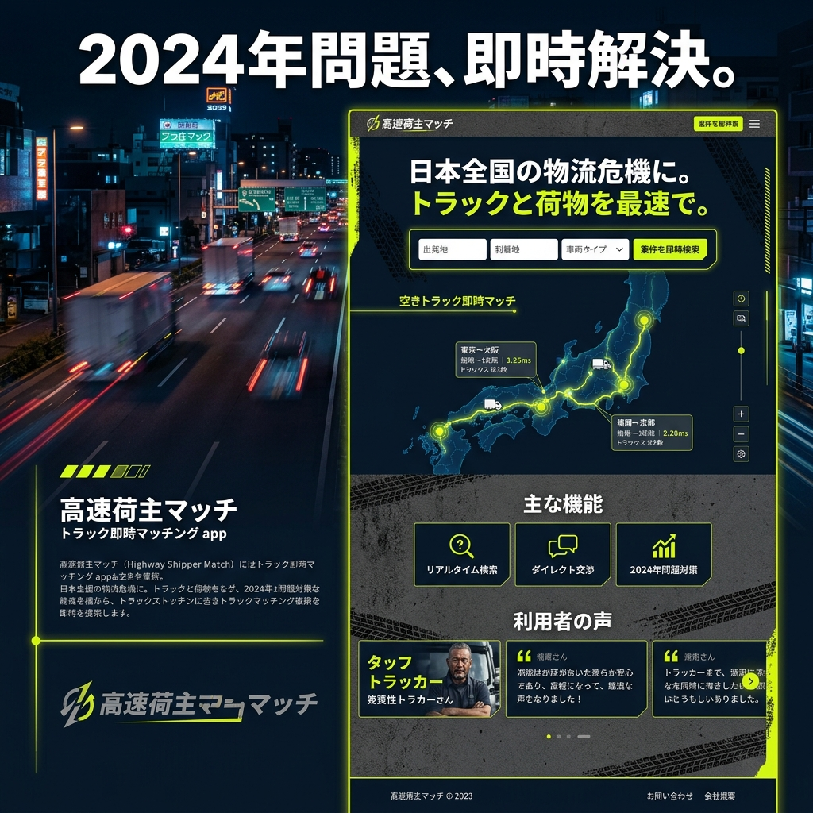

見えない厨房を、
最強の艦隊にする。
フードデリバリー特化のゴーストキッチン向け、調理から配送までの完全自動最適化OS「GHOST-FLEET」。複数のデリバリープラットフォームからの注文を一元管理し、キッチンの稼働限界を突破します。

「マルチタブレット」という厨房の悪夢
Uber Eats、出前館、Wolt。売上を上げるためにプラットフォームを増やせば増やすほど、厨房にはタブレットが林立し、注文の入力漏れや調理の順番ミスが多発します。この「デジタルな手作業」が、ピーク時の機会損失を生んでいます。
すべての注文を、ひとつの画面に
全プラットフォーム一元管理
すべてのデリバリーアプリからの注文を1つの画面で自動受信。プラットフォーム間の在庫（売り切れ）も瞬時に同期します。
調理ステーション別オートディスパッチ
「揚場」「焼き場」など、各調理担当者のモニターへ最適な順番でタスクを自動分配。厨房内の無駄な声掛けをなくします。
配達員到着予測・連動タイマー
配達員のGPS位置情報をAIが解析し、「あと3分で到着」のタイミングに合わせて調理完了のアラートを出します。
ピークタイムの「バーチャル渋滞」を回避
雨の日のランチタイム。厨房のキャパシティを超える注文が入る前に、GHOST-FLEETが自動で各アプリの「準備時間」を延長調整、あるいは一時停止モードに切り替えます。クレームによる低評価リスクをAIが未然に防ぎます。
データが導く、次に当たるバーチャルブランド
一つの厨房で複数のバーチャルブランドを展開するゴーストキッチンの強みを最大化。「現在、このエリアでヘルシー系ボウルの検索数が急増しています」といった地域トレンドを分析し、翌週から展開すべき新メニューのレシピ案まで提案します。
Case Study | 都内のクラウドキッチン施設
10坪の厨房で4つのブランドを展開するオーナー。導入後、ピーク時の注文処理数が1.5倍に向上しつつ、タブレット操作にかかるスタッフ1名分の人件費を削減。また、配達員への受け渡し時間が平均4分短縮され、プラットフォーム内のアルゴリズム評価が劇的に上昇しました。
飲食業を、テクノロジー産業へ
美味しい料理を作るのは人間の仕事です。しかし、それ以外の複雑な情報処理はすべてシステムに任せるべきです。私たちは、料理人が料理だけに集中できる「静かな厨房」を実現します。